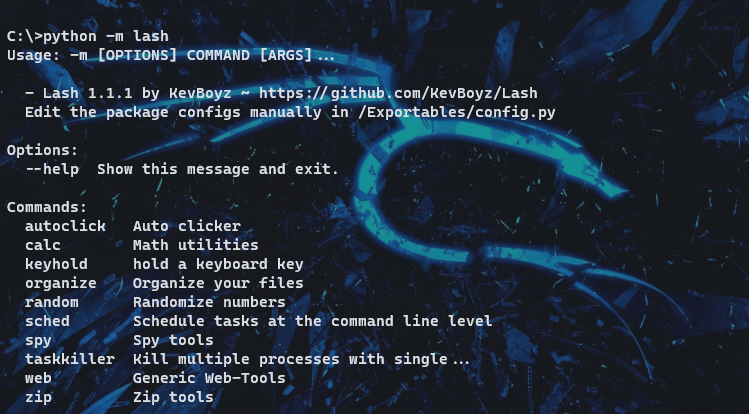

🛠 Lash Documentation v1.1.1 - Python package
written in 04/09/21 by KevBoyz Lash is a cli package developed in Python, he provides a set of desktop tools that simplify and automate repetitive processes. Lash also has utility functions that cover some needs of desktop users, like files encryptation or keylogger. Lash is actually available on Pypi and Github.
The tool have all commands documenteted with auto-help sections that can be viewd using the --help option, this article shows more datails and usages for commands.
How install and execute
You need to have Python3.5 > and pip installed in your machine, you can installed on python.org, after that, follow the steps below:
- Open your terminal and type pip install lash
- If the installation works, type: python -m lash
* In Linux systems, it's possible that this process will fail, I really couldn't resolve the error: beep.wav don't exists or not a regular file , but in Windows, still working. If this error persists, download the desired version from the github repository as zip or tar.gz and modify setup.py, removing the inclusion of the beep.wav and web_package.zip files, after that run the command setup.py install, everything should work normally, but the command web new will be crashed.
Lash usage syntax is: lash commands options args, many commands heve sub-commands in the same content, in this case, you need type the main command and the sub, sequencialy.
Commands usage, use as reference if you need.
-
autoclick
- Command not working, cause: Bug. Working on 1.0.0
Perform autoclicker to fast cliking or continuos click. You can set the click delay using the -cd (value in seconds) option be like: -cd 0.1 -> 10cps or if you want click and hold just use the -ch option, if you don't use any option the command will return a raise error. Finally use f4/f3 as shortcut keys to on/off. Note, this feature don't works much better consider clicking f3 several times to stop.
-
calc
Math utility pack, actually has no options and only sub-command that is prob.
-
prob
Calcule probability. Two arguments needed: possible_cases and favorable cases, the result can be viewd in percentage or floating number (more precise) with -d option. Example: calc prob 10 1 -> 10% or 0.1 if -d.
-
-
keyhold
Hold a keyboard key with virtual input. Just specify the key, the command break if any key pressed. keyhold w, after enter command press f4 to start. This command has maked as complement for click and hold function, is the perfect combination to auto mine in Minecraf (game).
-
organize
Organize files quickly. the basic command need the path at be organized, by default he's organized documents and 'others files'. You also have the option to organize sub-folders and midias with options specified in --help section. It's possible organize specified file type with -ft option. Command usage example: lash organize -ft .pdf C:\Users\User\Downloads.
-
random
Randomize decimal numbers, you can set in options: beginning and end of random set (1-5) and number of output characters. random -s 0 -e 1 -c 10 -> 0100010010.
-
sched
My favorite command at lash, with this you can schedule tasks in your computer. Sched have 3 sub-commands but all have the same purpose, after a time intervall, one command will be executed on terminal.
-
run
Run commands repetitively at a given interval starting from current machine time. Interesting to perform the same task every 5 minutes or seconds, like for example an update. sched run must receive the command to be executed in quotes after the declaration of the waiting time (h/m/s). Example: run "help" 0 0 2.
-
wait
Wait x time, run a task once and exit. Ideal for carrying out a waiting task, how to run an alarm or anything else, its usage mode is the same as run, however it has an extra feature, the remaining time is written in the terminal that is relative to the remaining hours, minutes and seconds.
-
exec
Execute a task from determined moment of day. If you need be more specific, this command will help you. Like the other sched subcommands, exec uses the machine's own time. To use you need set the time like a clock display: hh:mm:ss. Example: exec 10:30:0 "help"
-
-
spy
Gray Hat Tool Kit, use for espionage, theft or protection.
-
keylogger
Save all keyboard actions in .txt file, for use declare the exit location of the final file, if not declared, will be sent to the current folder of the terminal. Once active, it can be disabled by pressing f3
-
crypt
Encrypt files with the AES algorithm, be careful when using, you will need a 16-character key to encrypt and decrypt the file (-dc option to decrypt). Example: crypt text.txt $ycjms1@7y602qkx.
-
-
Taskkiller
This command is interesting if you want to boost your machine, with it you can kill multiple processes just by running lash taskkiller. Note permission errors can occur while programs are closed. To use this command you must first blacklist the processes so they can all be killed at once. It is necessary to go to the package's installation folder, which in my case is: C:\Users\User\AppData\Local\Programs\Python\Python39\Lib\site-packages\lash and then go through the following path: lash/Exportables and open the config.py file. Once this is done, the names must be put in the black_list variable, surrounded by quotation marks and separated by a comma.
-
web
Toolkit for web, I don't have ideas for subcommands, but the one that I make is really userfull
-
new
Start new web project, this command creates html, css and js files to quickly start your site. The usage is simple, declare the path to extract the files.
-
-
zip
Zip tools, one of the first commands I did
-
compress
Compress files into zip file. Declare the folder to be zipped, this command is the coolest that you can find in this package.
-
extract
Extract a zip file, simple as that, I don't think I need to tell you what you should do to use this command, but if in doubt use --help.
-
Conclusion
First, thanks to read this, I hope I helped you, second, you can help me? If you want to improve the site, i will be very grateful, goodbye.